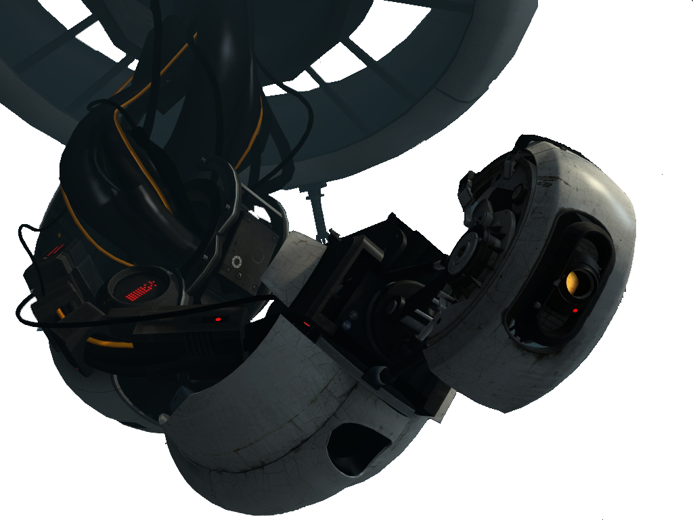

|  |
Central Core
GLaDOS (Genetic Lifeform and Disk Operating System) is the central core designed to control, guide, and oversee the Aperture Science computer-aided Enrichment Center. With the ability to shift and move facilities and various chambers, GLaDOS is able to achieve a seamless and almost infinite testing design whilst residing in the Central AI Chamber.
GLaDOS was a creation of Aperture Science, a personality core designed exactly to be fitted as a central computer mainframe. The project began under the oversight of Cave Johnson over the company, and was an attempt to create a fully functional, advanced artificial intelligence which was originally intended to be occupied by Johnson as one of his attempts to cheat death. After it became apparent to Johnson that he may die of moon rock poisoning before development on GLaDOS would be completed, Johnson motioned for the personality core to be based on Caroline instead.
After a decade's worth of hard work, GLaDOS was officially activated in 1998, as part of one of the many events during the company's "Bring Your Daughter to Work" day. Since she was able to take control of half of the facility's features, GLaDOS began killing most of its inhabitants by flooding the Enrichment Center with neurotoxin. However, only few if not only one of the staff such as Doug Rattmann had survived her attacks along with the series' main protagonist, Chell. The destruction of the company also coincided with an invasion of Earth, which had occurred two days after at Aperture's rival company, Black Mesa. This ultimately led to the negligence of the outside world from realizing Aperture's fate, as all attention had been diverted to Black Mesa and the aforementioned invasion.
Since the attack, she has managed the company to her limits. Her first test subject and the series' main protagonist, Chell, was given a warning of GLaDOS' true colors with the help of Rattmann. She confronts GLaDOS in her chamber at the end of Portal, which allowed GLaDOS to develop an even deeper hatred for her after she was awakened in the beginning of Portal 2.
|